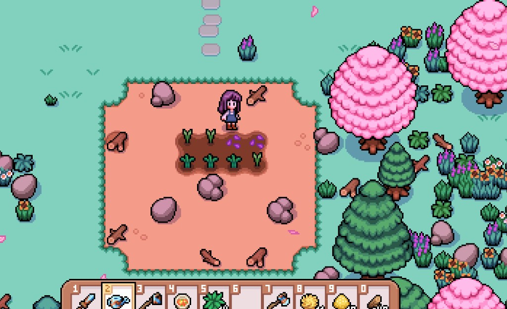
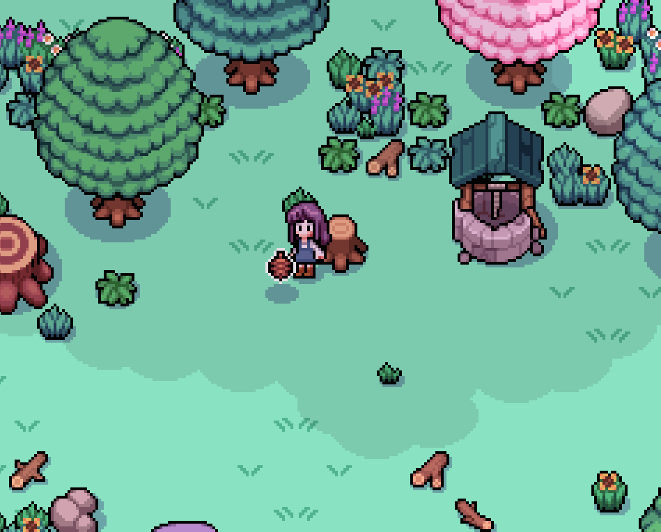
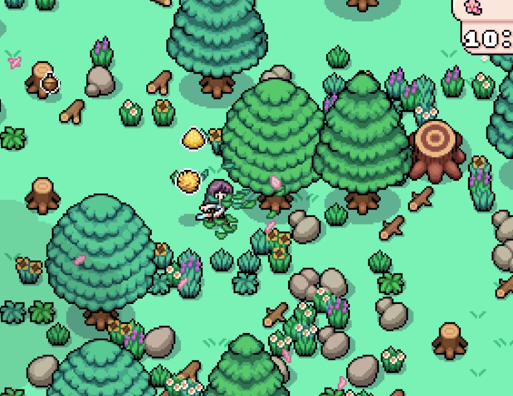

Quick answers
- Open a rectangle you can water every day.
- Walk around giant stumps until tools catch up.
- Rainy afternoons are good chop days.
- Wood and stone also feed early quests—park extras in a chest.
- Pretty paths can wait.
Clear a crop core
Hoe and water a small patch near the house. Expand only when mornings feel automatic. Screenshots from our save still show porch debris for weeks—that is fine.
Materials vs beauty
Chopping feeds wood quests (like early carpenter requests). Keep a stack in a chest. Do not clear decorative trees you like until you need the wood.
Safe to skip
- Flattening every rock on week one
- Symmetrical farm layouts before Summer
- Clearing while crops sit dry
Screenshots from our save
Real Fields of Mistria shots from our first-season play. Captions in English; in-game UI language may differ.




FAQ
Should I clear the whole farm in Spring?
No. Clear plantable space and a path to the door.
Big stump blocking me?
Walk around until your axe tier can handle it.
Unofficial fan guide. Not affiliated with NPC Studio. Verify details in your game version.